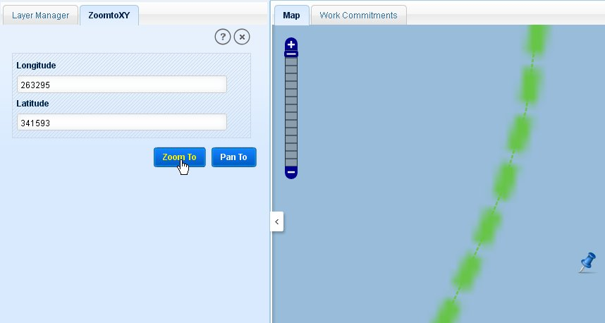

‘Zoom To XY’ tool allows users to zoom to a location of known coordinates on the map canvas. Click on the tool and application opens ZoomtoXY tab in left panel.

Zoom to specified Co-ordinates
Enter the longitude and latitude of the location.
Click on ‘Zoom To’ button. Application will zoom to the entered location with a pin mark on map.
After entering the coordinates of the location, user clicks on ‘Pan To’ button, application pans the map to that location with a pin mark.